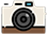

GALERIA DE IMAGENS
Veja na nossa galeria de fotos várias belas imagens que mostram algumas das principais características do Google Glass, como recursos e propriedades que estão impressionando o mundo inteiro.
Passe o mouse sobre uma das fotos para ver uma versão ampliada e com uma breve descrição.
- Agenda e lembretes
- Sergey Brin usando o Glass
- Leve e compacto
- Sensação de uma tela de 50"
- Vários tipos de lente
- Informações importantes